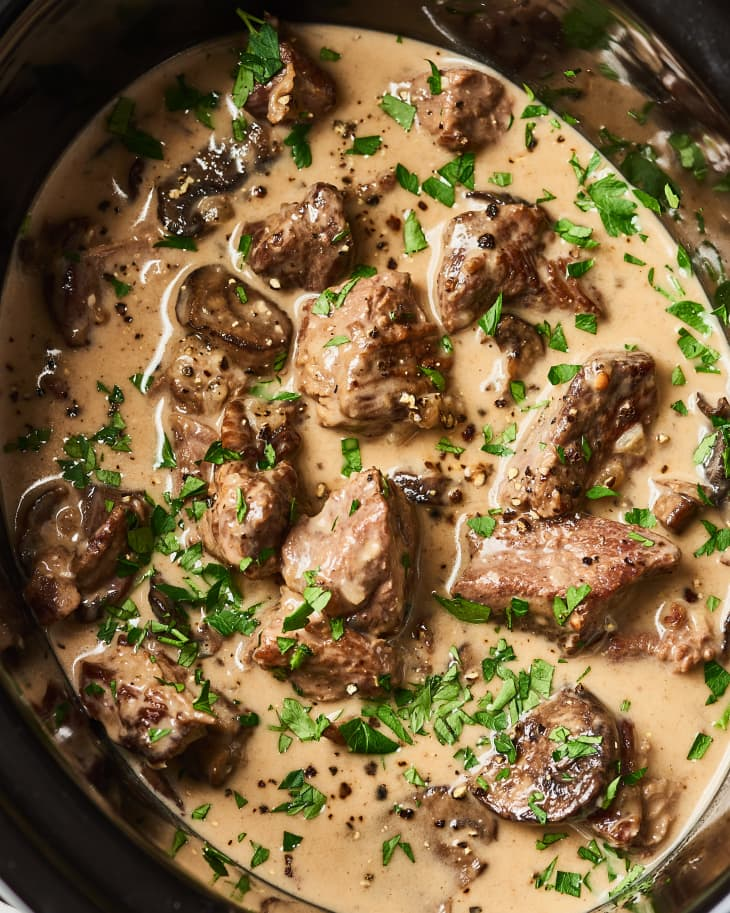

Ingredients
- Cooking spray
- 2 pounds chuck or bottom round beef stew meat, cut into 1 1/2-inch pieces
- 1/4 cup all-purpose flour
- 1 1/4 teaspoons kosher salt
- 1 teaspoon freshly ground black pepper
- 8 ounces cremini mushrooms, sliced 1/4-inch thick
- 1 small yellow onion, diced (about 1 cup)
- 2 cloves garlic, minced
- 1 1/4 cups low-sodium beef broth
- 2 tablespoons Worcestershire sauce
- 8 ounces dried egg noodles
- 2 tablespoons unsalted butter, melted
- 1 cup full-fat sour cream (8 ounces)
- 2 tablespoons chopped Italian parsley leaves (optional)
Yummy stroganoff
Recipe Notes
Make ahead:
The stroganoff can be made up to 2 days in advance. Reheat in the microwave or on the stove over low heat.Storage:
Refrigerate stroganoff and pasta in separate airtight containers for up to 2 days.Directions
- Coat a 5-quart or larger slow cooker with cooking spray.
- Place the beef, flour, salt, and pepper in a large bowl and toss until the beef is evenly coated.
- Transfer the beef and any flour left in the bowl to the slow cooker.
- Add the mushrooms, onion, garlic, beef broth, and Worcestershire sauce, and stir to combine.
- Cover and cook until the beef is tender, 6 to 8 hours on the LOW setting, or 3 to 4 hours on the HIGH setting.
- 30 minutes before you are ready to eat, cook egg noodles according to package directions. Drain, toss with the butter, and set aside.
- Gradually and slowly stir the sour cream into the stroganoff. Serve over buttered noodles and sprinkle with the parsley if desired.